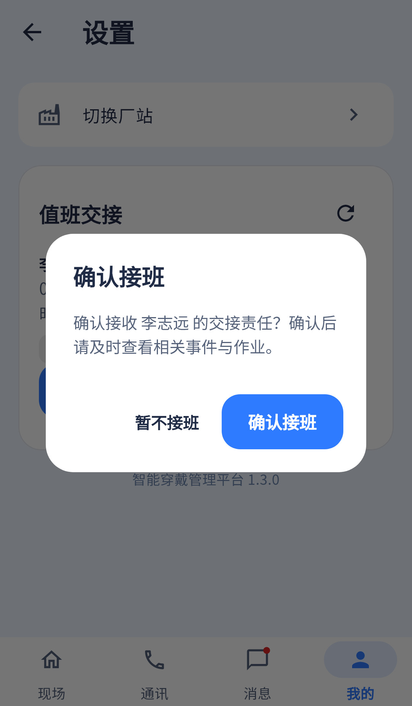

接班/发起交接代码都有；报告把截图35与实际完整交接区共同计入，避免漏掉发起交接。
相同 · 已有基础
交接双方、说明、事件/作业数量、确认接班和二次确认已有。
不同 · UI与场景
当前在设置卡内展示，截图单独展开确认弹框；缺待接/已接页签及按事件状态分开的统计。
01 / 先看 UI
两图显示宽度统一；设计390px与当前360逻辑宽的画布不同。各图可独立滚动到底，点击“原图”放大。


使用既有组件截图；业务数据为示例。
02 / 逐项核对功能与小交互
入口：设置 → 待接班记录 → 确认接班 · 当前形态：弹层
| 编号 | 部位 | 设计要求 | 当前UI | 功能结论 | 下一步 |
|---|---|---|---|---|---|
| 35-01 | 归属 | 值班交接完整内容稿 | 当前设置子区+确认对话框 | 已有代码 | 整合列表与确认两种状态一起验收 |
| 35-02 | 页签 | 待接班/已接班 | 当前混排列表无页签 | 缺失 | 补筛选和计数，保持全部可查 |
| 35-03 | 双方时间 | 交班人→接班人及时间 | 当前读fromUserName/toUserName/createTime | 已有代码；旧采集样例用createdAt可能显示未知 | 改测试样例字段，真实接口字段按契约核实 |
| 35-04 | 事项 | 交接说明 | 当前读comment | 已有代码；旧样例summary不等于comment | 核对真实说明字段，不把样例缺字段算逻辑缺失 |
| 35-05 | 数量 | 待处理3、处理中2 | 当前payloadJson展示总事件数+作业数 | 部分：有汇总但统计维度不同 | 后端提供状态快照或明确总数含义，不能拆假数字 |
| 35-06 | 确认权限 | 仅当班接收人可确认 | 当前pending、toUserId等于本人且isDuty | 已有代码 | 保留非接收人只读、已确认禁用 |
| 35-07 | 二次确认 | 读完事项再接班 | 当前确认对话框，暂不接班/确认 | 已有代码 | 增加摘要使确认前可读完整交接内容 |
| 35-08 | 提交 | 确认接班 | POST handovers/id/confirm后刷新 | 已有代码 | 真实责任变化待联调，失败不冒充成功 |
| 35-09 | 发起交接 | 参考35未画入口 | 当前现场顶部发起，选同站人、说明、提交 | 已有代码：POST handovers | 必须保留并补发起弹层验收 |
| 35-10 | 责任语义 | 交接不等于自动完成事件 | 现有流程依服务端 | 待实测：确认后的事件责任与通知需联调 | 验一次确认、重复确认及多人竞争 |
源码依据
mine_page.dart:41,64,113,800；queries/workbench.dart:675,784
链接为随报告保存的带行号快照；行号对应分析时源码。以函数和字段共同定位，不能将请求代码视为执行成功证据。